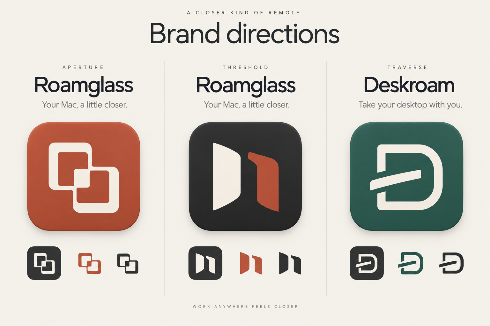

mooring
Somewhere else.
Still your Mac.
Your Macs, within reach.
A native remote workspace for the Macs you own. Your work stays on your Mac; your desktop comes into reach.
Remote desktop for MacA place to connect.
A workspace to come back to.
Mooring is the selected name. The Threshold mark keeps its shape, with a bright, festive bohemian palette.
Your Macs, within reach.
A native remote workspace for the Macs you own. Your work stays on your Mac; your desktop comes into reach.
Remote desktop for MacMooring suggests a connection to a familiar place. The two facing panels keep the Threshold idea of a passage between workspaces. Marigold and coral pink bring the celebration; graphite gives them a steady foundation.
#FFD447#FF5277#1CC9B7#242726Marigold replaces ivory. Coral pink replaces ember. Turquoise supports the wider brand; the icon uses two colors on graphite.
The menu-bar mark stays monochrome. The Dock icon carries the full palette.
Connect there. Work here.
Illustrative layout and device names. Native controls keep their system behavior.
Use saturated color, curved shapes, and a little editorial character around the brand. Keep everyday app surfaces and text easy to read. The mark stays crisp, without texture or extra detail at small sizes.
Choose a Mac. Connect. Return to your workspace. The native app now carries Mooring’s name, mark, and palette.

The center Threshold silhouette was selected. This earlier image predates Mooring and the festive palette. The editable SVGs above contain the current colors. Original image-generation prompt.